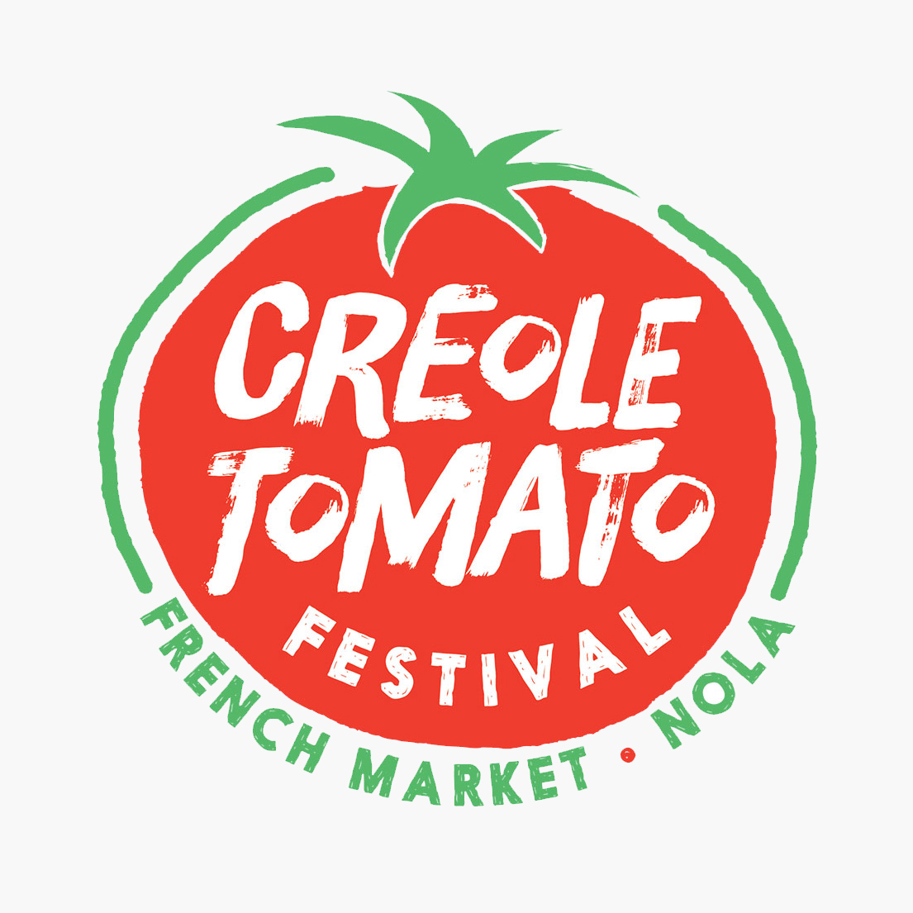
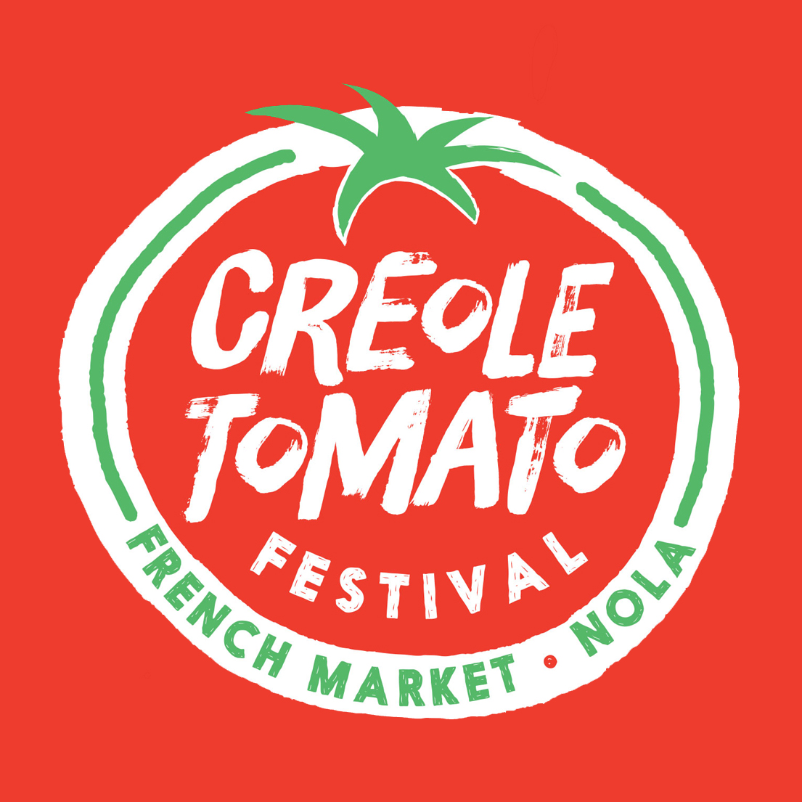

The Creole Tomato Festival is an annual event produced by the French Market Corporation in New Orleans. Since the 1980s, it's held every June and celebrates the harvest of Creole tomatoes – named for tomatoes grown in the unique Louisiana soil along the Mississippi River. The festival features live music, tomato-inspired food and drinks, and local farmers selling boxes of fresh tomatoes.
- Client
- French Market Corporation
- Agency
- Deep Fried Advertising
- Years Active
- 2014-2020
- Role
- Lead Design
- Work
- Logo, Print/Digital Advertising, Promo Items, Banners, Environmental Signage

Since 2014, I've created materials for the festival as part of my extensive work with the French Market District. The branding for the fest evolved over the years, starting with a pop-art style from 2014-2017. Then in 2018, I completely revamped it into a bright-red and juicy brand.


Materials designed for the festival include print advertisements, billboards, banners, stage scrims, cups, sunglasses, and t-shirts.